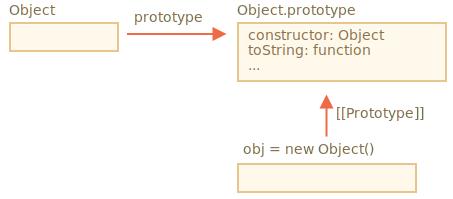
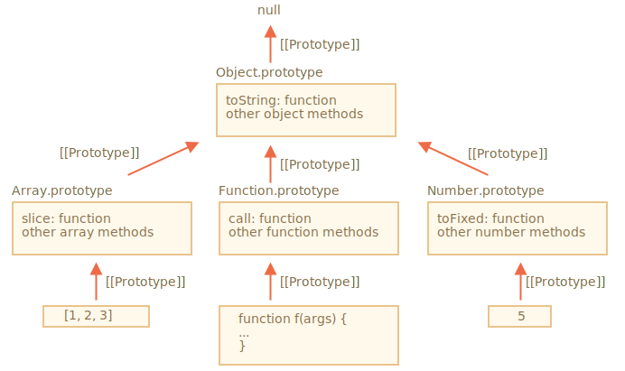

"prototype" 属性在 JavaScript 自身的核心部分中被广泛地应用。所有的内置构造函数都用到了它。
首先，我们将看看原生原型的详细信息，然后学习如何使用它为内建对象添加新功能。
假如我们输出一个空对象：
let obj = {};
alert( obj ); // "[object Object]" ?生成字符串 "[object Object]" 的代码在哪里？那就是一个内建的 toString 方法，但是它在哪里呢？obj 是空的！
……然而简短的表达式 obj = {} 和 obj = new Object() 是一个意思，其中 Object 就是一个内建的对象构造函数，其自身的 prototype 指向一个带有 toString 和其他方法的一个巨大的对象。
就像这样：
当 new Object() 被调用（或一个字面量对象 {...} 被创建），按照前面章节中我们学习过的规则，这个对象的 [[Prototype]] 属性被设置为 Object.prototype：

所以，之后当 obj.toString() 被调用时，这个方法是从 Object.prototype 中获取的。
我们可以这样验证它：
let obj = {};
alert(obj.__proto__ === Object.prototype); // true
// obj.toString === obj.__proto__.toString == Object.prototype.toString请注意在 Object.prototype 上方的链中没有更多的 [[Prototype]]：
alert(Object.prototype.__proto__); // null其他内建对象，像 Array、Date、Function 及其他，都在 prototype 上挂载了方法。
例如，当我们创建一个数组 [1, 2, 3]，在内部会默认使用 new Array() 构造器。因此 Array.prototype 变成了这个数组的 prototype，并为这个数组提供数组的操作方法。这样内存的存储效率是很高的。
按照规范，所有的内建原型顶端都是 Object.prototype。这就是为什么有人说“一切都从对象继承而来”。
下面是完整的示意图（3 个内建对象）：

让我们手动验证原型：
let arr = [1, 2, 3];
// 它继承自 Array.prototype？
alert( arr.__proto__ === Array.prototype ); // true
// 接下来继承自 Object.prototype？
alert( arr.__proto__.__proto__ === Object.prototype ); // true
// 原型链的顶端为 null。
alert( arr.__proto__.__proto__.__proto__ ); // null一些方法在原型上可能会发生重叠，例如，Array.prototype 有自己的 toString 方法来列举出来数组的所有元素并用逗号分隔每一个元素。
let arr = [1, 2, 3]
alert(arr); // 1,2,3 <-- Array.prototype.toString 的结果正如我们之前看到的那样，Object.prototype 也有 toString 方法，但是 Array.prototype 在原型链上更近，所以数组对象原型上的方法会被使用。
浏览器内的工具，像 Chrome 开发者控制台也会显示继承性（可能需要对内置对象使用 console.dir）：

其他内建对象也以同样的方式运行。即使是函数 —— 它们是内建构造器 Function 的对象，并且它们的方法（call/apply 及其他）都取自 Function.prototype。函数也有自己的 toString 方法。
function f() {}
alert(f.__proto__ == Function.prototype); // true
alert(f.__proto__.__proto__ == Object.prototype); // true, inherit from objects最复杂的事情发生在字符串、数字和布尔值上。
正如我们记忆中的那样，它们并不是对象。但是如果我们试图访问它们的属性，那么临时包装器对象将会通过内建的构造器 String、Number 和 Boolean 被创建。它们提供给我们操作字符串、数字和布尔值的方法然后消失。
这些对象对我们来说是无形地创建出来的。大多数引擎都会对其进行优化，但是规范中描述的就是通过这种方式。这些对象的方法也驻留在它们的 prototype 中，可以通过 String.prototype、Number.prototype 和 Boolean.prototype 进行获取。
"值 null 和 undefined 没有对象包装器"
特殊值 null 和 undefined 比较特殊。它们没有对象包装器，所以它们没有方法和属性。并且它们也没有相应的原型。
## 更改原生原型 [#native-prototype-change]
原生的原型是可以被修改的。例如，我们向 `String.prototype` 中添加一个方法，这个方法将对所有的字符串都是可用的：
```js
String.prototype.show = function() {
alert(this);
};
"BOOM!".show(); // BOOM!在开发的过程中，我们可能会想要一些新的内建方法，并且想把它们添加到原生原型中。但这通常是一个很不好的想法。
原型是全局的，所以很容易造成冲突。如果有两个库都添加了 `String.prototype.show` 方法，那么其中的一个方法将被另一个覆盖。
所以，通常来说，修改原生原型被认为是一个很不好的想法。在现代编程中，只有一种情况下允许修改原生原型。那就是 polyfilling。
Polyfilling 是一个术语，表示某个方法在 JavaScript 规范中已存在，但是特定的 JavaScript 引擎尚不支持该方法，那么我们可以通过手动实现它，并用以填充内建原型。
例如：
if (!String.prototype.repeat) { // 如果这儿没有这个方法
// 那就在 prototype 中添加它
String.prototype.repeat = function(n) {
// 重复传入的字符串 n 次
// 实际上，实现代码比这个要复杂一些（完整的方法可以在规范中找到）
// 但即使是不够完美的 polyfill 也常常被认为是足够好的
return new Array(n + 1).join(this);
};
}
alert( "La".repeat(3) ); // LaLaLa在 info:call-apply-decorators#method-borrowing 一章中，我们讨论了方法借用。
那是指我们从一个对象获取一个方法，并将其复制到另一个对象。
一些原生原型的方法通常会被借用。
例如，如果我们要创建类数组对象，则可能需要向其中复制一些 Array 方法。
例如：
let obj = {
0: "Hello",
1: "world!",
length: 2,
};
obj.join = Array.prototype.join;
alert( obj.join(',') ); // Hello,world!上面这段代码有效，是因为内建的方法 join 的内部算法只关心正确的索引和 length 属性。它不会检查这个对象是否是真正的数组。许多内建方法就是这样。
另一种方式是通过将 obj.__proto__ 设置为 Array.prototype，这样 Array 中的所有方法都自动地可以在 obj 中使用了。
但是如果 obj 已经从另一个对象进行了继承，那么这种方法就不可行了（译注：因为这样会覆盖掉已有的继承。此处 obj 其实已经从 Object 进行了继承，但是 Array 也继承自 Object，所以此处的方法借用不会影响 obj 对原有继承的继承，因为 obj 通过原型链依旧继承了 Object）。请记住，我们一次只能继承一个对象。
方法借用很灵活，它允许在需要时混合来自不同对象的方法。
Array.prototype、Object.prototype、Date.prototype 等）。Number.prototype、String.prototype 和 Boolean.prototype。只有 undefined 和 null 没有包装器对象。